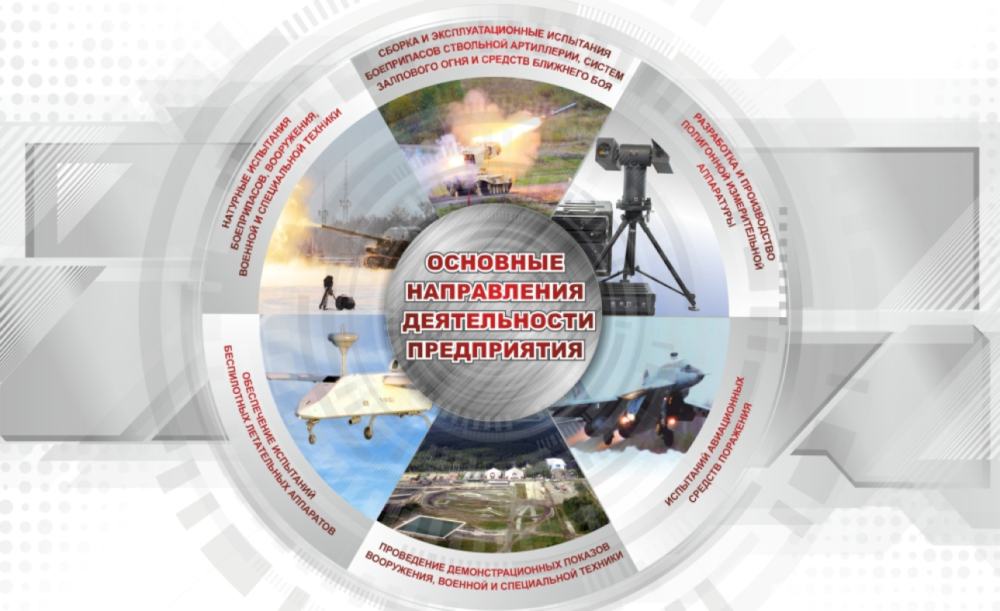

ФИЛИАЛ “НТИИМ” ФКП “НИО “ГБИП РОССИИ”
Филиал “Нижнетагильский институт испытания федерального казенного предприятия “Национальное испытательное объединение “Государственные боеприпасные испытательные полигоны России”
Филиал “Нижнетагильский институт испытания федерального казенного предприятия “Национальное испытательное объединение “Государственные боеприпасные испытательные полигоны России”
Уральский артиллерийский полигон, а ныне филиал «Нижнетагильский институт испытания металлов» федерального казенного предприятия «Национальное испытательное объединение «Государственные боеприпасные испытательные полигоны России» является уникальным межотраслевым научно-исследовательским полигоном национальной значимости и головной организацией по полигонному приборостроению.
Приближается любимый народный праздник – Новый Год. И конечно, в эти весёлые радостные дни всем хочется покататься на горках, полюбоваться на праздничную Ёлку и красивые интересные снежные фигуры. Вечером 26 декабря торжественно «открылась» Новогодняя Ёлка Дома культуры «Салют». Этот день с нетерпением ждали многие жители посёлка Старатель. Кажется, здесь даже можно было найти ответ на сложный вопрос – «когда приходит детство? – В Новый Год!» В эти особенные, волшебные дни вместе с красавицей ёлкой и яркими праздничными огнями ко всем нам приходят чуть наивные, но радостные чувства, надежды и мечты.
Вот и пролетел 2023 год, который для совета ветеранов НТИИМ выдался очень насыщенным. Отмечу основные, самые знаменательные события. В этом году на поселке Старатель была налажена бесперебойная работа по плетению маскировочных сетей на военную технику и каски бойцов – участников специальной военной операции. Самое активное участие в этом процессе из состава ветеранов НТИИМ приняли Ермак Наталья Михайловна, Глушкова Марина Альбертовна, Белозерова Елена Николаевна, Власова Татьяна Алексеевна, Вяткина Елена Петровна, Вершкова Елизавета Михайловна, Шибаева Валентина Ивановна. Все они за свой кропотливый труд были награждены почетными грамотами и ценными призами.